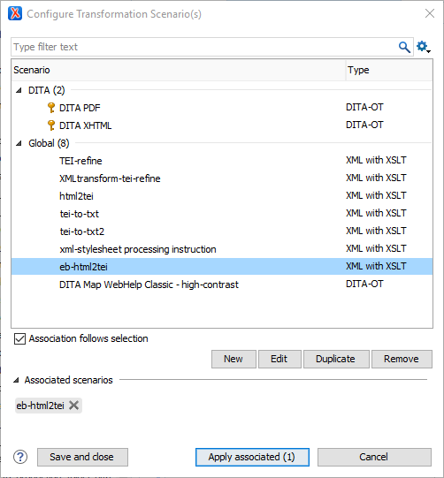
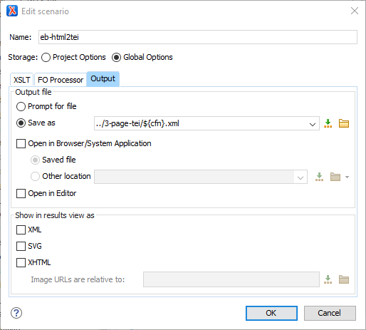

Transform the HTML Files to TEI
How to convert HTML files to TEI in Oxygen.
Work in batches again, using the eb-html2tei.xsl script.
-
Select the batch of HTML files in the
Oxygen XML Editor
Project window, right-click, and select Transform > Configure transformation scenarios…
Figure: The Configure Transformation Scenario(s) window.

- In the window that opens, select eb-html2tei under Global and click Edit. This opens the Edit scenario window. If eb-html2tei does not appear in the list, you will have to Create a Transformation Scenario before continuing with the next step.
- On the XSLT tab of the New/Edit scenario window, make sure XML URL reads $(currentFileURL).
- Change Transformer to Saxon-PE 9.7.0.x .
-
On the Output tab, set Save as: to
../3-page-tei/${cfn}.xml. This outputs the transformed
files directly into the correct subfolder.
Figure: Output tab of the Edit scenario window

- Uncheck Show in results view as: XML, and leave Open in Editor unchecked. This stops Oxygen from opening 250 new windows, which you will have to close.
- Click OK to close the Edit Scenario window and return to the Configure Transformation Scenario(s) dialogue.
- Click Apply associated to run the scenario on the selected files and save the results in the 3-pages-tei folder.
-
Validate all of the new XML files in the
3-pages-tei folder. To do this, select all of the new
files in the Oxygen
Project window. Right-click, Validate > Validate. .
If there are no errors, the transformation is complete.Sometimes you will encounter errors at this stage. This should be rare and the errors should be relatively simple. A basic knowledge of TEI is all that is needed to correct them manually. If you are not sure, please ask. If no one can help you, make a note of the pages with errors and leave it for the person in charge.